Transmission Reassembly
Transmission ReassemblyNOTE:
^ Prior to reassembling, clean all the parts in solvent, dry them, and apply MTF to any contact surfaces.
^ Place the clutch housing on two pieces of wood thick enough to keep the mainshaft from hitting the workbench.
1. Install the magnet (A) and the differential assembly (B).
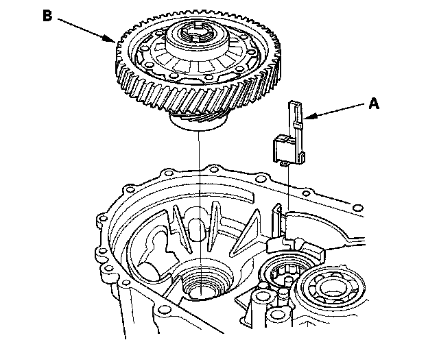
2. Install the 28 mm spring washer (A) and the 28 mm washer (B) over the ball bearing (C). Note the installation direction of the spring washer.
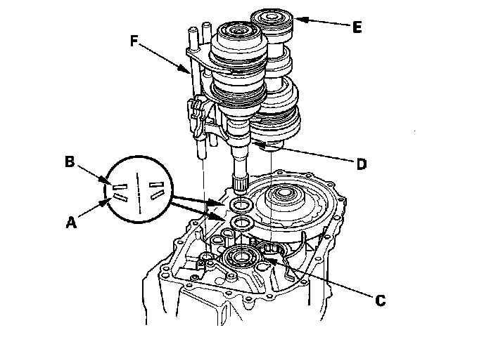
3. Apply tape to the mainshaft (D) splines to protect the seal. Install the mainshaft assembly and the countershaft (E) into the shift forks (F), and install them as an assembly.
4. Install the reverse shift fork.
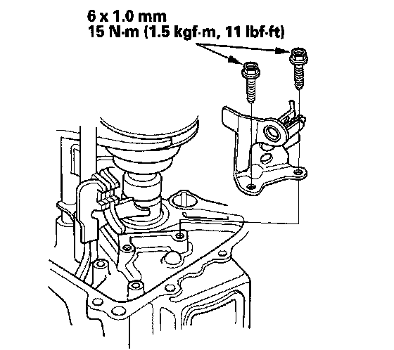
5. Install the reverse idler gear (A) and the reverse gear shaft (B) by aligning the mark (C) with the reverse gear shaft hole (D).
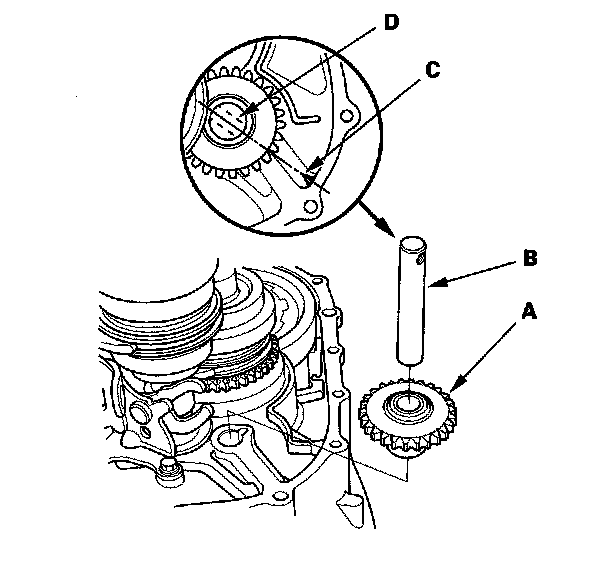
6. Select the proper size 72 mm shim (A) according to the measurements made during the Mainshaft Thrust Clearance Adjustment. Install the oil gutter plate (B), the oil guide plate and the 72 mm shim into the transmission housing (C).
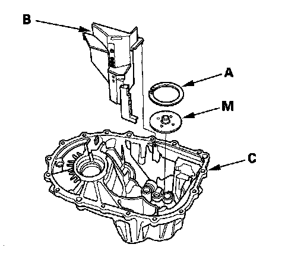
7. Clean any dirt or oil from the transmission housing sealing surface. Apply liquid gasket (P/N 08718-0002) to the sealing surface as shown.
NOTE: Do not install the transmission housing if too much time has passed after applying the liquid gasket (for P/N 08718-0002, no more than 4 minutes, for all others, no more than 5 minutes). Instead, remove the old residue and reapply the liquid gasket.
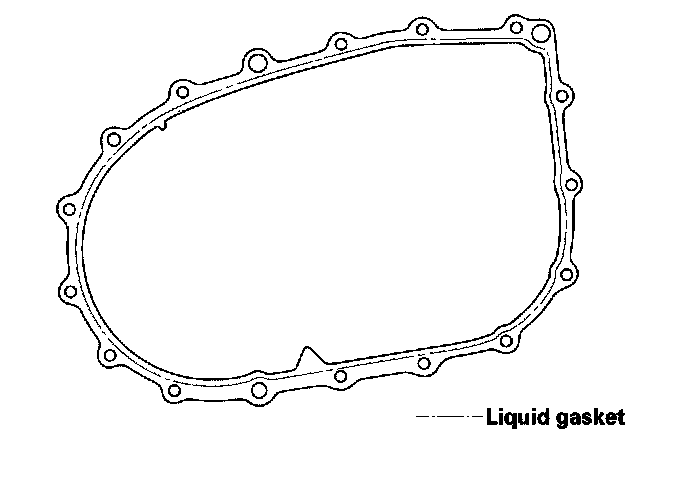
8. Install the three 14 x 20 mm dowel pins (A).
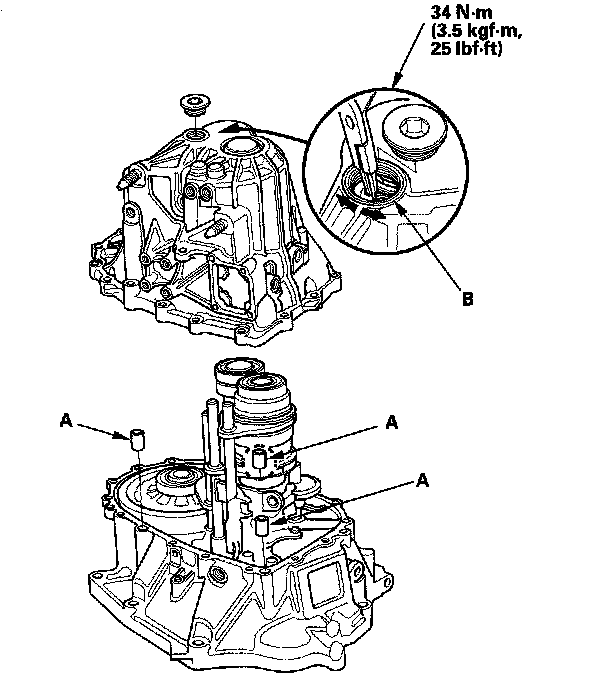
9. Place the transmission housing over the clutch housing, being careful to line up the shafts.
10. Lower the transmission housing the rest of the way as you expand the 72 mm snap ring (B). Release the snap ring so it seats in the groove of the countershaft bearing.
11. Make sure the 72 mm snap ring is securely seated in the groove of the countershaft bearing.
Dimension (1) as installed: 3.3 - 6.0 mm (0.13 - 0.24 in.)
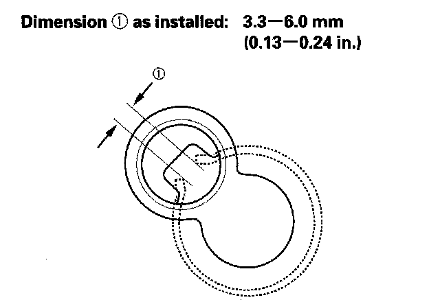
12. Apply liquid gasket (P/N 08718-0002) to the threads of the 32 mm sealing cap (C), and install it on the transmission housing.
13. Install the transmission hanger A, the transmission hanger B, the harness bracket (C), and the 8 mm flange bolts finger tight.
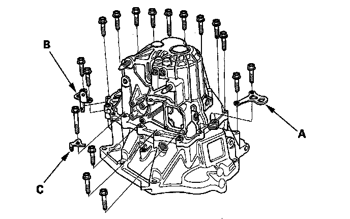
14. Tighten the 8 mm flange bolts in a crisscross pattern in several steps.
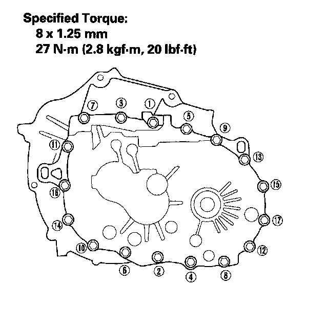
15. Clean any dirt or oil from the shift ]ever cover sealing surface. Apply liquid gasket (P/N 08718-0002) to the sealing surface.
NOTE: Do not install the change lever assembly if too much time has passed after applying the liquid gasket (for P/N 08718-0002, no more than 4 minutes, for all others, no more than 5 minutes). Instead, remove the old residue and reapply the liquid gasket.
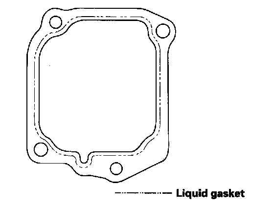
16. Install the 8 x 14 mm dowel pins (B), change lever assembly (C), and harness bracket A.
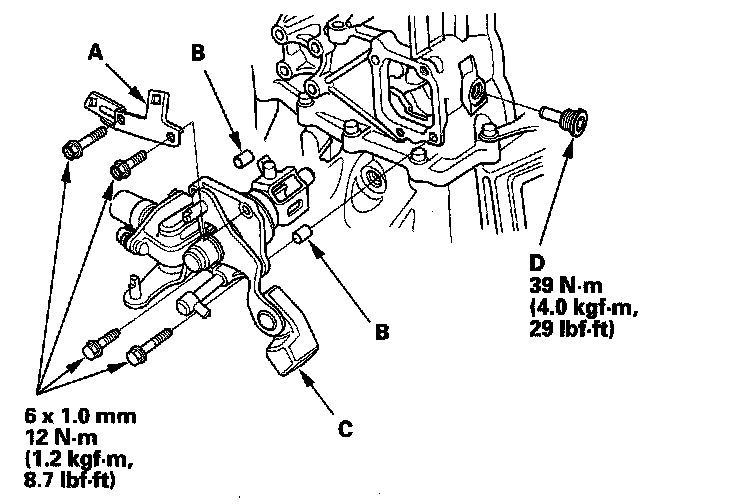
17. Apply liquid gasket (P/N 08718-0002) to the threads of the interlock bolt (D), and install it on the transmission housing.
18. Install the drain plug (A), the 10 mm flange bolt (B), the output shaft (countershaft) speed sensor (C), and the new O-ring (D).
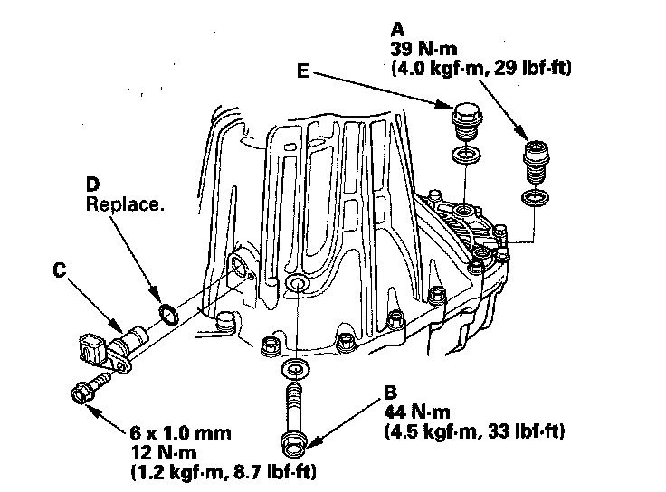
19. Install the detent bolts (A), the springs, and steel balls with new washers (B). Then install the transmission hanger (C).
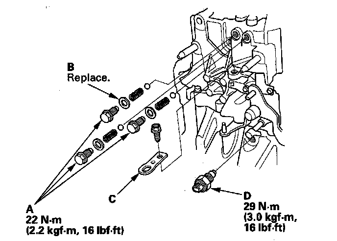
20. Apply liquid gasket (P/N 08718-0002) to the threads of the back-up light switch (D), and install it in the transmission housing.
21. Install the 20 mm bolt (A) and new 20 mm washer (B).
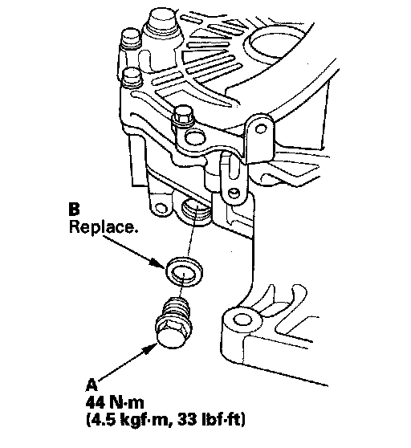